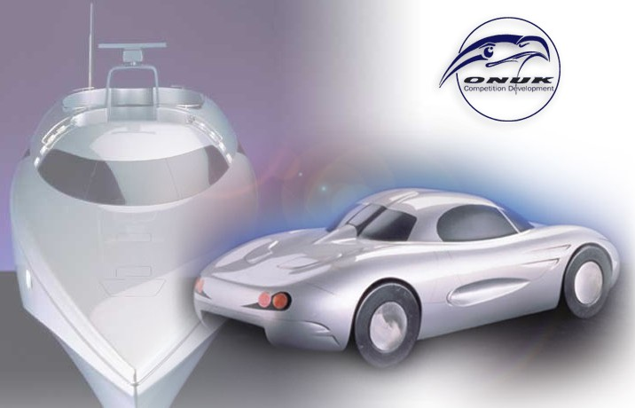
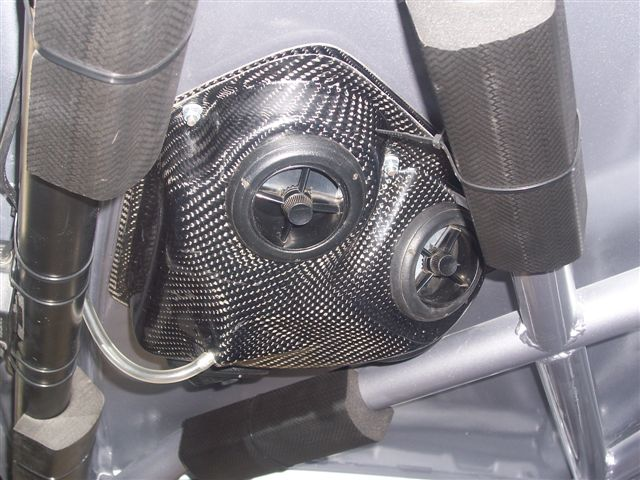
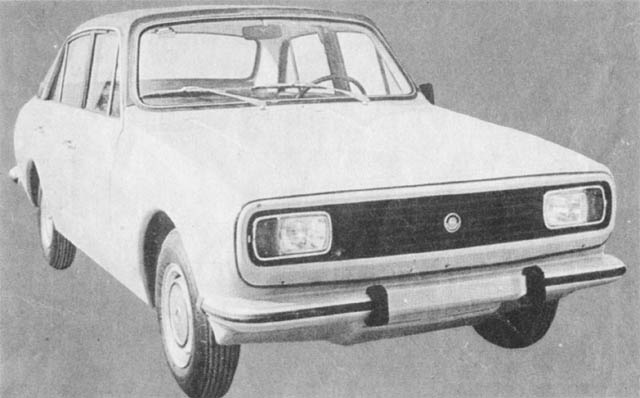
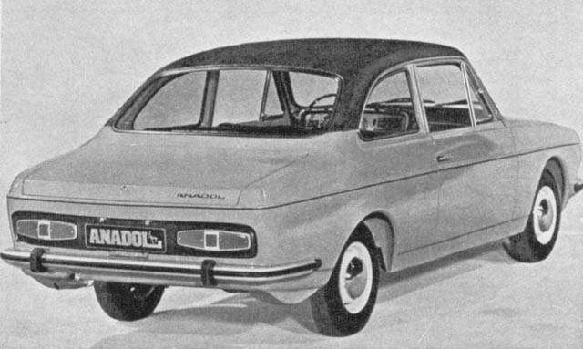
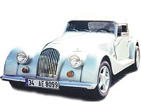
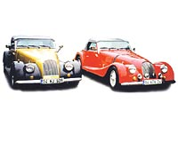
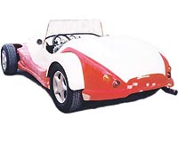
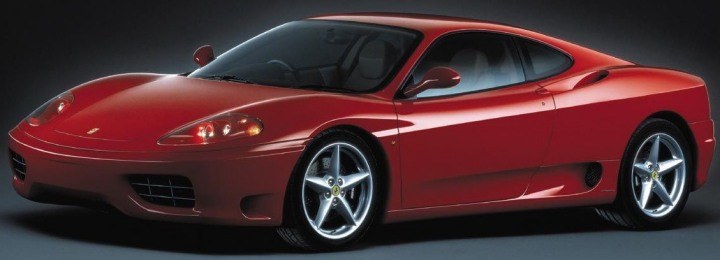

|
26.10.2005
Olgun Bey,
Bahsetmiþ olduðunuz PININFARINA 25 Mayýs 1930 yýlýnda Battista "Pinin" Farina tarafýndan, BERTONE firmasý ise Kasým 1912 yýlýnda Giovanni Bertone tarafýndan at arabasý tasarýmý ile iþe baþlamýþ bir firmadýr. Yani 75 ve 93 yýllýk bilgi birikimleri olan firmalardýr.
Dikkat etmemiz gereken bir diðer konu ise bu firmalar endüstriyel tasarým yapmaktadýrlar. Sitelerini incelerseniz (www.pininfarina.it) olan araçlar üstüne farklý kaporta uygulamalarý göreceksiniz. Bu da daha çok endüstriyel ürün tasarýmýna giriyor.
Daha önce de söylediðim gibi bu iþ Amerika'da HOTROD olarak adlandýrýlýyor. Bu iþ konusunda Chip Foose gibi Ford firmasýnýn fuara sokacaðý Thunderbird'ü (proje bittikten sonra Chip Foose arabaya SPEEDBIRD adýný vermiþtir) özelleþtirsin diye çalýþtýðý kimseler vardýr. Ancak bu kimseler kullandýklarý birçok parçayý piyasadan tedarik etmekte, iç döþeme ve kaporta iþlemleri elde yapýlmaktadýr ki çoðu zaman olan parçalarýn kesilmesi gibi modifikasyonlar ile özelleþtirilmektedir.
Daha öncede belirttiðim gibi yürüyen aksamlarýn hepsi piyasadan tedarik edilmektedir. Jantlar ise Chip Foose'un kendi özel tasarýmlarý (ki bunlarda kendisi tarafýndan piyasaya sürülmektedir) olmaktadýr. Belki de yürüyen aksamýn özel tasarým olarak en kolay olarak üretilebilecek parçalarýdýr. Birde bu yapýlan araçlar sokak arabasý deðildir. O yüzden bu jantlara yorulma testi gibi testler uygulanmýyordur büyük olasýlýkla.
Sami Bey'in 26.10.2005 tarihli e-postasýna ek olarak BMW'nin bir modelinde (araç en ufak parçasýna kadar komple tasarlanmýþtý. Yani tam anlamýyla bir araba tasarýmý idi. Yanlýþ hatýrlamýyorsam yeni kasa 7 serisinde) karþýlaþýlan bir sorunu da aktarmadan edemeyeceðim:
Tasarým ekibi (ki burada sözü geçen kimseler endüstriyel ürün tasarýmcýsý ve arabanýn görsel tasarýmýndan sorumlu kiþiler ya da diðer bir deyiþle "Arabayý bunlar tasarladý" diye lanse edilen kimselerdir) ile mühendislik ekibi arasýnda mühendislik biriminin aracýn dýþýnda aracýn içinde mutlaka olmasý gereken bir parça için deðiþiklik yapmalarýný istemesinden dolayý bir anlaþmazlýk oluþmasýdýr. Tasarým birimi her ne kadar istemese de bu zorunluluk karþýsýnda geri adým atarak arabanýn çamurluklarýnda biraz deðiþiklik yaptý. Bu kadar sorunu yaratan parçanýn adý ise AKÜ idi.
Ýyi Çalýþmalar,
Okan Kýlýnç
Mühendislik Birimi Yöneticisi
Göçmenler Oto Çerçeve Alüminyum San. ve Tic. Ltd. Þti.
Ýstanbul
26.10.2005
Deðerli üyeler,
Konu uzun sürdü biliyorum. Bu isteðimizin sonucunu görmek isteyen, isteði duyan bir kiþi olan þahsým zorluklarý öðrenmek için taþýn altýna elini tereddütsüz koymaktadýr.
Bir yola girmeden öncü gidenleri inceleme faydasýný görmekteyim.
Eðer istiyorsanýz Göztepe Oto Sanayisi içerisinde bir atölyeniz varsa Otomobil üretirsiniz. Yapýlamayacak þey yoktur. Sadece istemek gerek. "Peki bunca insan neden olmaz diyor?" derseniz onlara da hak vermek gerek. Latif Taþtan bey iþi doðru özetlemiþ; Denildiði gibi büyük üretici olmak zor. Ama merdivenlere alttan baþlamak ama birer birer deðil mümkünse üçer beþer basamaklardan yükselmek gerekir.
"Asla yapýlamaz" kimse diyemez, dememelidir. Vehbi Koç 1950'li yýllarda bu hayali gerçekleþtirmek için ne sýkýntýlarla baþ etmek zorunda kalmýþtýr, bunu anlamaya baþlarýz. Günümüz þartlarýnda yan sanayi imkanlarýný Vehbi Koç'un çektiði zorluklara borçluyuz.
Henry Ford ilk otomobilinin motorlarýný kendi mi üretmiþtir? Hayýr. Dodger's Biraderlerden almaktaydý.
"Aþk var mý?" ona bakalým. CAD programlarý sadece bir araç. Ford Otosan'lý yýllarýmda unutmadýðým kiþilerden zamanýnýn Takým Kalýp Müdürü Emin OFLEZER'in þöyle bir sözü vardý; "Bana yapamýyoruz deme. Biz zamanýnda çekiç ile yapýyorduk". Eðer elinizde çekiç ve azminiz varsa otomobil yapabilirsiniz.
Konuya teknik bakmadým. Teknik olarak otomobil üretiminin sahip olmasý gereken þartlara girersek resim kayboluyor.
Ýzin verirseniz ince bir teknik latife ile sözüme son vereyim. Yerli imalat araç 1 litre benzin ile 100km giderse yok satar. Bir de hýz göstergesinde de 340km yazarsak deðmeyin keyfimize...
Bir gün kendi ismi ile araç üreteceðini düþünen birini okudunuz/ dinlediniz.
Saygýlarýmla
Ertan Sarýbayrakdaroðlu
26-10-2005
Deðerli üyeler,
Ekber Onuk bey, kompozit þaseli böyle bir aracýn imalatýna zaten baþladý:
www.onukcars.com
Zamaný gelince Türkiye kendi üretimini zaten yapacaktýr; Örnek sektör ise gemi inþaatýdýr...
Saygýlarýmla
Murat Birecik

26.10.2005
Tüm üyelere selam,
Devrim otomobili'nin nasýl tasarlanýp, ne ortamlarda hesaplarýnýn yapýldýðý ve imalatýnýn yapýldýðýný sanýrým herkes biliyordur. Her grup için ayrý ekiplerin oluþturulduðunu ve sýnýrlý imkan ve teknoloji ile bunu gerçekleþtirebildiklerini biliyoruz. Tabii bu yeni çalýþmanýn sonunda çýkacak ürünün seri üretim tekniklerine uygun olup olmadýðýný, yakýt ve ürün fiyatlarýnýn bu günün koþullarýnda rekabet edip edemeyeceðini tartýþmak bu aþamada uygun olmaz. Yalnýz fýkýr olarak Türk insanýnýn da ortaya koyabileceði ve Türk mühendis, tasarýmcý, konstrüktör ve imalatçýlarýnýn kabiliyetlerinin ve tecrübelerinin ortaya çýkmasý açýsýndan güzel bir öneri olarak düþünülmesi gerekli diye düþünüyorum.
En büyük problem olarak gördüðüm; böyle bir konuda çalýþmak isteyenlerin, ayný çatý altýnda bir araya gelerek hangi sorumluluklarý alabileceklerini, þu andaki teknoloji ile yapýlacak olan çalýþmanýn nasýl rekabet edebileceðinin araþtýrýlmasý, projeyi finanse edecek kurum ve kuruluþlarýn yapýlacak olan proje ve testleri ne kadar finanse edebileceklerinin çözülmesi gereken temel problemlerden sadece bazýlarý olduðunun bilinmesi gerekir.
Bir çok yerli otomotiv sanayinde gövde, þaþý ve karoser tasarýmýnýn yerli tasarýmcýlar tarafýndan yapýldýðý bilinmektedir. Kendi imkanlarýmýzla devrilme testleri ve analizlerinin yapýldýðý ve bu sonuçlarýn AB ülkelerinde de onaylandýðý görülmektedir. Bu bilgi ve birikim Türk insanýn da vardýr. Yalnýz biraz cesarete ve kendimize güvene ihtiyacýmýz var.
Herkesin böyle bir projede imkan verildiði takdirde severek gönül baðý ile fedakarlýklarda bulunacaðýndan hiç kimsenin þüphesi yoktur... Daha iyi bir Türkiye için el ele vermek, tek hedef olmalý...
Saygýlarýmla
Yýldýray Girgeç
TEMSA Otomotiv
www.temsa.com.tr
26.10.2005
Deðerli üyeler,
Türkiye'de ulusal sermaye ile araç üretmek hem mümkün hem de deðil. Þu þekilde anlatýrsam daha açýk olurum sanýrým:
Neden mümkün?
Türkiye'de þu an 80 küsur üniversite var. Bunlarýn yarýsýnda mühendislik fakültesi olsa eder 40. Bunlarýn yarýsýnda otomobil üretmekle alakalý mühendislikler olsa (makina-elektrik-elektronik-malzeme-bilgisayar-endüstri vb) eder 20. Her bölümden yýllýk ortalama 50 öðrenci mezun olsa eder 1000. Bunlarýn 1/4'ü otomotiv alanýnda kullanýlmasý gereken bilgi ve beceriye sahip olsa eder 250. Haydi daha karamsar olalým, bunlarýn 1/5'i projelerde yer alabilecek olsa eder 50. Her yýl üniversitelerimizden 50 kalifiye mühendis otomotiv sektöründe çalýþabilecek düzeyde mezun olmakta. Bunlara piyasada bu iþleri yapan tecrübeli mühendisleri eklediðimizde ulaþacaðýmýz sayý en az 250-300 olur ki bence ilk aþamada böyle kaliteli bir mühendis ordusu ile aracýn her türlü analizi, tasarýmý, dizayný yapýlabilir.
Tabii sadece mühendislerde bitmiyor iþ. Tekniker lazým, usta lazým, iþçi lazým. Þu an Türkiye'de 5-6 tane büyük otomobil ya da kamyon yada otobüs üreticisinin fabrikalarý ve burada çalýþan binlerce iþçisi var. Böyle bir iþ gücü kullanýlabilir. Tabii sadece bu fabrikalarda çalýþan iþçilerden bahsetmiyorum. Bunlarýn yan sanayinde çalýþan firmalar da var. Artý elimizde internet gibi bir dünya var ki TurkCADCAM.net gibi bir portal sayesinde karþýlaþtýðýmýz sorunlara farklý yaklaþýmlarla çözüm bulabiliyoruz. Yani üretime gelene kadarki kýsým için ben sýkýntý çekeceðimizi zannetmiyorum.
Neden mümkün deðil?
Seri üretime kadarki kýsmý hallettiðimizi düþünürsek bile üretimi yapabilmek kolay bir iþ deðil. Öncelikle elimizde bu iþ için kullanýlacak makina parký oluþturmak lazým. Sadece 2 pres, 3 CNC tezgah ile olmayacaðýný biliyoruz. Tasarým aþamasýna da bir dünya masraf olacaðý düþünülürse böyle bir iþe giriþmek için birçok firmanýn birleþerek taþýn altýna elini sokmasý lazým. Dünya otomobil devlerinden Daimler ile Chrysler'in birleþmesi de pazar payýnýn yanýnda maliyetleri makul tutarlara çekmek istenmesindendir. Buradan da anlýyoruz ki, bir firmanýn tek baþýna üretmek istemesi sadece gelip geçici bir heves olarak sonuçlanmasýna neden olacaktýr. Böyle bir ortaklýk oluþturmak, böyle büyük bir maliyeti karþýlamak Türkiye þartlarýnda ise zor gözükmekte?..
Bence istemek önemli. Sayýn Salih Bey'in e-maili bu kadar cevap alabiliyorsa bu iþe önayak olacak birinin çaktýðý kývýlcým ile ve böyle bir iþe giriþme isteðiyle bence yapýlabilir. Ama öncelikle fizibilitesi çýkarýlýp ona göre bir yol belirlenmesi gerekir. Ben inanýyorum ki içimizde bunu baþarabilecek sinerji mevcut.
Gürkan Karagöz
DEÜ Makine Müh. Öðrencisi
27.10.2005
Deðerli üyeler,
Ertan Bey'e bu güzel mesajý için teþekkür ediyorum; Gerçekten cesaret arttýrýcý bir e-mail.
Günlerdir burada bir sürü insan yazýyor hepsi de güzide üniversite mezunu kariyer basamaklarýný hýzla týrmanan kiþiler. Hepsinin görüþüne saygý duyuyorum fakat þunu anlamakta güçlük çekiyorum. Neden biz de yapmayalým? Bizim neyimiz eksik?..
Yapanlar acaba bu iþe bu günleri görerek mi baþlamýþlar yoksa küçük küçük adýmlarla baþlayýp bugünlere mi gelmiþler? Neden bizim de bir gün böyle bir þey yapma gibi bir idealimiz ve hedefimiz olmasýn?
Neden insanlarýn cesareti kýrýlýr, giriþimcilikleri öldürülür? Bizim ne eksiðimiz var? Yapanlarýn IQ'su yüksek te bizimkisi mi düþük? Bizim aþaðýlýk kompleksimiz nereden geliyor? 600 yýllýk büyük bir devlet geçmiþi olan bir milletin torunlarý deðil miyiz? Dünyada 500 senedir ayakta kalan eserler yapýp dünyanýn hala hayranlýkla izlediði eserleri baþkalarý mý yaptý?..
Bence biz nerede hata yapýyoruz, bunu düþünmeliyiz. Yüz binlerce üniversite mezunu verip, insanlarýn giriþimciliklerini ortadan kaldýrýrsanýz geriye bir þey kalmaz...
Herkese iyi çalýþmalar diliyorum.
Saygýlarýmla
Hanifi Taþdemir
Müh. Müd.
Erdemir A.Þ.
www.erdemir.com.tr
27.10.2005
Deðerli üyeler,
Otomobil tasarýmý üzerine yazýlanlarý ilgiyle izliyorum, idealist gençlerimizin fikirleri ülkemizin geleceði için ümit vaat ediyor, bu çok sevindirici.
Sýfýrdan bir otomobil üretmek ve hem de seri üretmek kolay deðil ama yapýlamaz da deðil. Bunun için kaynak gerek ve bu kaynak fazlasýyla ülkemizde var ama bu kaynak sahiplerine nasýl ikna edebileceðiz?..
Ülkemizde otomotiv sektörünün geliþmesi için 1960'lý senelerde otomobil ithalatý zorlaþtýrýldý ve yerli üreticilere büyük imkanlar verildi. Bu uygulama 80'li yýllara kadar devam etti; Fakat "20 yýl gibi uzun bir sürede bu firmalar ne yaptý?" diye bakarsak; Birkaç Avrupa firmasýnýn taþeronluðuyla büyüyüp o yabancý firmalarý ihya ettikleri söylenebilir...
Bir baþka konu; Halkýmýz kolay para kazanmaya alýþtýrýldý. Bizim tartýþtýðýmýz ise para kazanmanýn zor yolu, çünkü Dünya devleri ile rekabet etmek gerekiyor, para sahipleri bu iþe para yatýrmaz, riskli görür. Kýsacasý bu iþ çok zor.
Fakat yine de bir giriþim olursa ben þahsým adýna karýnca kararýnca katýlmaktan gurur duyarým.
Hiç bir þey için geç deðildir. Gerçek milliyetçilere duyurulur; Haydi ülkemiz için bir baþlangýç yapalým. Bu iþin önderliðini de ATO baþkaný sayýn Sinan Aygün bey yapsýn...
Herkese saygýlar
Ýbrahim Demirtaþ
MAR-EL Makina
Gülbahçe Mah. Þimþek Sok. No:1
Bursa
www.marelmakina.com
27.10.2005
Deðerli üyeler,
Konuyla ilgili görüþlerimi belirtmeden önce size kendimi kýsaca bir tanýtmak istiyorum;
Yaklaþýk 19 yýldýr otomobil ile gece gündüz demeden iç içe yaþayan biriyim. Ayný zamanda otomobil yarýþçýsýyým. Kompozit malzemelerden aðýrlýklý olarak yarýþ otomobillerine yönelik parça imal etmekteyiz.

Eðitimime gelince; Önce otelcilik sonra da iþletme eðitimi aldým fakat otomobili o kadar çok seviyordum ki bu arada iki yýllýk, sandviç denilen ve "otomobil mühendisliði" adý altýnda bir bölümden de mezun oluverdik...
Ýþimiz kompozit ve otomobil yarýþçýlýðý da olunca ister istemez yurtdýþýndaki fabrika takýmlarý da insanýn arkadaþý ve bütün çevresi oluveriyor. Bir gün telefonunuz çalýyor ve hayalinizin ötesindeki bir proje teklifi geliyor; Evet, bu proje bir otomobil tasarýmý idi!
Uzun lafýn kýsasý biz bir otomobil tasarladýk, bunu tamamladýk, test ettik, paketledik ve yurt dýþýndaki müþterimize teslim ettik. Öyle, konuþulduðu gibi milyonlarca dolar falan da tutmadý.
"Araç ne?" derseniz onu da 2007 Cenevre Otomobil Fuarý'nda göreceksiniz. Eðer sabýrsýzlanýrsanýz gizlilik anlaþmamýz çerçevesinde yetkimiz olan bir iki resim gösterebilirim...
Þimdi konumuza gelelim;
Nur içinde yatsýn, Sayýn Vehbi Koç bu millete Atatürk'ten sonra çok deðerli bir miras býrakmýþtýr; O da sanayileþmektir. Bizim bugün yaþadýklarýmýza bakýyorum ve Anadol'un oluþumundaki sýkýntýlarý hayal dahi etmek istemiyorum. Bu hakikaten çok büyük bir olaydýr.


Arkadaþlar, otomobil üretimi bir kaç konu baþlýðý altýnda tartýþýlmalýdýr; Kit car otomobiller, düþük adet üretim otomobilleri ve yüksek adet otomobil üretimleri:
Kit car otomobiller:
Bugün Sn. Hasan Yurdakul'un ürettiði tip otomobillerdir. (Maral, Morgan, Catherham, "replica"lar, Westfield gibi) yani ufak çaplý bir atölyede (3-10 kiþi) kendi þasisi ve kaporta aksamýný dizayn eder, sonra bu pakete mevcut bir motor ve yürüme aksamýný monte ederler. Dizayn esnasýndaki ekipman, bilgi ve maliyet sýkýntýlarý bazý parçalarýn kendi taraflarýndan akuplasyonunu gerektirebilir.

Asýl hedef, bu tip aracýn satýn alan kiþiye özel olmasý ve montajýn satýn alan tarafýndan yapýlabiliyor olmasýdýr. Bu pazar Ýngiltere'de baþlamýþ olup bugün Dünya'nýn her yerine yayýlmýþtýr. Ana pazar yine de hala Ýngiltere'dir yaklaþýk 100'e yakýn irili ufaklý üretici senede yaklaþýk 3000 araç satmaktadýr. Bu tip otomobillerin varlýðýnýn gençlerin, yani yeni mühendislerin yetiþmesindeki rolü büyüktür.
Düþük adet üretim otomobiller:
Senede 100-2500 adet arasý üretimi planlanan otomobillerdir. Bu otomobiller daha geliþmiþ detaylý mühendislik içeren tip otomobillerdir. Ferrari, Lamborghini, Lotus gibi hepinizin gayet iyi tanýdýðý araçlardýr yani.

Ferrari Modena
Yüksek adet üretim otomobiller:
Hepinizin tahmin edeceði gibi günümüzde galeriden satýn aldýðýmýz (Ford, Fiat, Toyota vs.) tipi araçlardýr. Bu tip araçlar hakkýnda söylenecek pek bir þey bulamýyorum.
Þimdi gelelim yerli üretime;
Elif hanýmýnda dediði gibi "zaten memleketimizde otomobil üretiliyor siz neyin peþindesiniz?"
Türkiye hiç de sanýldýðý gibi uyumamýþtýr. Belli baþlý kalemler A'dan Z'ye yapýlmýyor olabilir, o da motor, elektronik gibi bir kaç hususu geçmez. Pekiyi Dünya'nýn geri kalaný ne yapýyor? Birbirlerinden alýyorlar. Bu tamamen konsantrasyonla alakalý bir konudur.
Örneðin Mitsubishi Carisma'nýn vites kutusunun içi tamamen Renault 9-11 grubudur. 2005 model araç ama vites kutusu 1983 model! Ýþ sonuçta gelip satýþa, o da fiyata ve satýþ sonrasý hizmete takýlýp kalýyor.
NCAP test olayýna gelince, bu tamamen markalarýn uydurduðu bir testtir. Ýþin özünde tabiî ki daha güvenli araçlar yatmaktadýr. Bu testler belli açýlar ve süratlerde yapýlýr fakat gerçek hayatta ne bu açý ne de sürat tutmamaktadýr; 60 km hýzla giden 5 yýldýzlý bir Smart veya Clio'nun 60 km hýzla karþý yönden gelen bir 5 yýldýzlý Mercedes E 200 ile çarpýþtýðýnda ortaya çýkacak manzaraya inanamazsýnýz. Pekiyi nerede Smart'ýn ya da Clio'nun yýldýzlarý?..
Uzun lafýn kýsasý, bu tartýþmaya bir son verelim artýk...
Hepinize iþlerinizde baþarýlar dilerim.
Saygýlarýmla
Levent Gür
LTG Ltd. Þti.
Ýstanbul
|